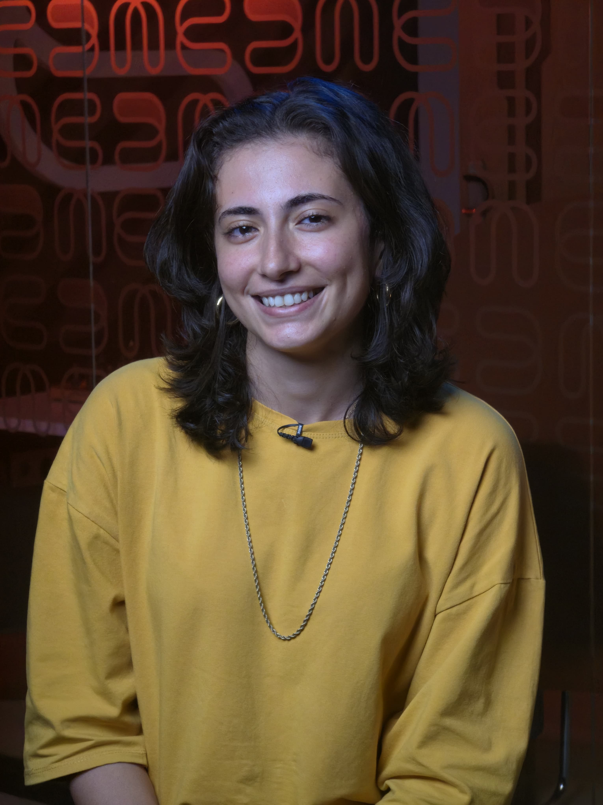

EL GHEMARY
FARAH

Jack of all trades ✨
Trying things out loud.
I’m Farah, passionate about technology, education, and impact. I believe in learning by trying, failing, and starting again. This site isn’t about presenting a perfect version of me — it’s a space where I think, build, and reflect out loud. You’ll find projects that worked, some that didn’t, and ideas still in progress. For me, documenting is as important as doing.
What I Do“Many hats, one story”
I’ve worn many hats: Student, Mentor, Teacher, Organizer, Explorer and sometimes, all at once. At first glance, they might look like scattered roles, but to me, they’re pieces of the same puzzle. Curiosity is what ties them together.
In the classroom, I’m guiding kids through robotics challenges, learning as much from their questions as they do from my answers. On the trail, I’m chasing mountain peaks with the same determination I bring to debugging code. At Global Shapers, I’m working to spark conversations that matter, building bridges between ideas and people. Some days, I’m running to test my limits; other days, I’m struggling to keep up with breakdance beats — but both remind me that growth comes from movement, even if it’s clumsy at first.
My path has had detours: dropping out, starting over, trying things that didn’t quite land. But I see those as part of the documentation, not failures to hide. Every role, every attempt, every unfinished project is one more way of exploring the question that drives me: how do we learn, create, and connect in ways that matter?
Say Hello
I’m always open to new ideas, collaborations, and conversations. Whether you’re a student, a fellow educator, or just curious, feel free to reach out.
Open Contact